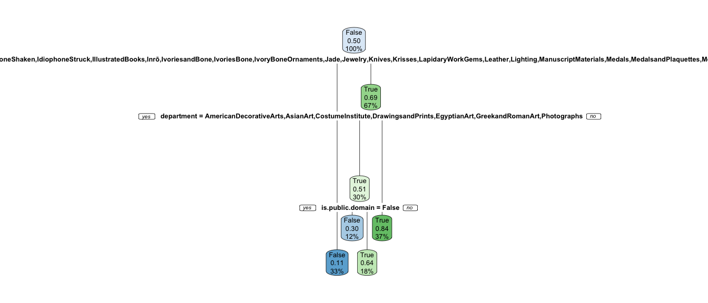

Chapter 4 [Model 3]
4.1 random forest
reference: https://www.r-bloggers.com/2021/04/random-forest-in-r/ https://stats.stackexchange.com/questions/493714/random-forest-variable-importance-plot-discrepancy
## is.public.domain
## is.highlight False True
## False 843 648
## True 303 1180## Confusion Matrix and Statistics
##
## Reference
## Prediction False True
## False 1273 271
## True 218 1212
##
## Accuracy : 0.8356
## 95% CI : (0.8218, 0.8487)
## No Information Rate : 0.5013
## P-Value [Acc > NIR] : <2e-16
##
## Kappa : 0.6711
##
## Mcnemar's Test P-Value : 0.0187
##
## Sensitivity : 0.8538
## Specificity : 0.8173
## Pos Pred Value : 0.8245
## Neg Pred Value : 0.8476
## Prevalence : 0.5013
## Detection Rate : 0.4280
## Detection Prevalence : 0.5192
## Balanced Accuracy : 0.8355
##
## 'Positive' Class : False
## ## Confusion Matrix and Statistics
##
## Reference
## Prediction False True
## False 303 145
## True 65 231
##
## Accuracy : 0.7177
## 95% CI : (0.6839, 0.7498)
## No Information Rate : 0.5054
## P-Value [Acc > NIR] : < 2.2e-16
##
## Kappa : 0.4367
##
## Mcnemar's Test P-Value : 4.994e-08
##
## Sensitivity : 0.8234
## Specificity : 0.6144
## Pos Pred Value : 0.6763
## Neg Pred Value : 0.7804
## Prevalence : 0.4946
## Detection Rate : 0.4073
## Detection Prevalence : 0.6022
## Balanced Accuracy : 0.7189
##
## 'Positive' Class : False
## 
## [1] "The accuracy on the training dataset is: 0.835238735709482"## [1] "The accuracy on the testing dataset is: 0.719086021505376"